| Previous document |
Mandelbrot Set
We cannot end our little introduction to chaos and fractals without mentioning the figure that started all the excitement about computer generated fractal images; namely, the Mandelbrot set.
As for the previous document on Julia sets, some reader may choose to skip the next theoretical sections and instead choose to read only the section on the where they may draw the Mandelbrot set and generate Julia sets for different points of the Mandelbrot set.
Definition
Almost no proofs are included in the theoretical sections. The main reason for this choice is that they are not easy and therefore inappropriate for a website. The reader who want to study the proofs may consult the list of at the bottom of this document.
We have seen in that every polynomial function of degree 2 is conformally conjugate to a polynomial function Pc defined by
for some value of c ∈ ℂ.
We attempt to classify
the values of
c ∈ ℂ for which the
Julia sets of Pc is connected.
Definition: The Mandelbrot set is the set M defined by
= {c ∈ ℂ : {0, c, c^2 + c, (c^2 + c)^2 + c, ((c^2 + c)^2 + c)^2 + c, ...} is bounded} .
It follows from that
because 0 is the only finite critical point of Pc for c ∈ ℂ.
The Mandelbrot set is drawn in the following figure.
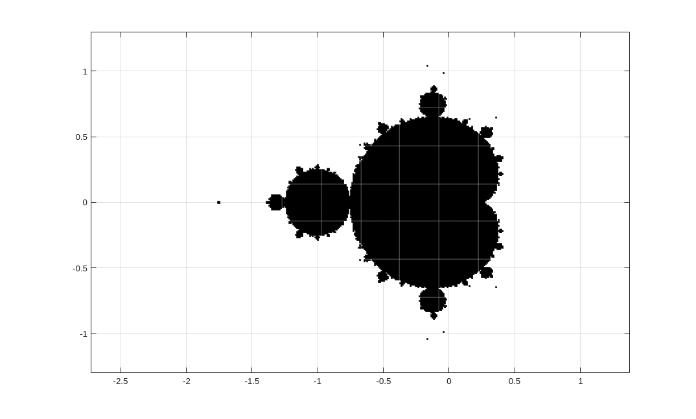
have proved the following result which seem to contradict what we observe in the previous figure. We must never forget that our graphical applications are limited by the accuracy of the numerical computations and the resolution of the computer screen. It is therefore not surprising that some minuscule details may be missing in the figure.
Theorem: The Mandelbrot set is connected and simply connected.
The Mandelbrot set is bounded. More precisely, we have that M ⊂ B2(0). To prove this claim, we consider |c|>2. We have that |Pc∘2(0)| = |c^2 +c| = |c||c+1| > |c|. It follows from our discussion in the section that |Pc∘(j+2)(0)| =|Pc∘j(Pc∘2(0))| → ∞ as j → ∞. The ball B2(0) is the smallest ball centred at the origin that contains the Mandelbrot set. We leave it to the reader to rigorously prove that ℝ ∩ M = [-2,1/4]. This result can be visualized with the following graphical application. This application draws the cobweb graph associated to Pc for c ∈ ℝ and the initial condition z0 = 0. Note that the orbit {zj}j≥0, where zj+1 = Pc(zj) for j≥0, converges to a fixed point if -2 ≤ c ≤ 1/4 but is unbounded for other values of c ∈ ℝ.
|
Only real values of c must be used. The number of iterations should be very small when c ≤ -2 or c > 0. When the orbit is unbounded, the cobweb graph grows very large very rapidly. An expression like 1/2 is not accepted as a value of c because the content of these fields is not evaluated. Thus 1/2 is not interpreted as a number. |
Remark: We mentioned in the Remark in the section that when c ∈ ℝ goes from 0 to -2, we observe a period doubling cascade as we have for the logistic function. The reader may use the graphical application above to investigate this phenomena. The field below can be used to modify the value of z0.
z0 =
Let
It follows from that H ⊂ M because 0 is the unique finite critical point of Pc. Hence, if Pc has a finite super-attracting or attracting orbit, then 0 is in the basin of attraction of this periodic orbit. We have that H is an open set because the function G:ℂ × ℂ → ℂ defined by G(z,c) = Pc(z) is analytic with respect to both variables (see the proof of the next proposition). Hence, H is a subset of the interior of M.
Definition: A connected component W of the interior of M is called hyperbolic if W ⊂ H
Proposition: The hyperbolic components W are open sets.
Proof: This result is proved using the implicit function theorem. Suppose that a ∈ W and that p is an attracting periodic point of period k of Pa. Since the function G:ℂ × ℂ → ℂ defined by G(z,c) = Pc∘k(z) - z is differentiable with respect to both variables, G(p,a) = 0 and DzG(p,a) = (Pa∘k)'(p) - 1 ≠ 0 because |(Pa∘k)'(p)|<1, we get from the implicit function theorem that there exist an open neighbourhood U of a, an open neighbourhood V of p, and a unique differentiable function f:U → V such that f(a) = p and G(f(c),c) = 0 for c ∈ U. Since |(Pa∘k)'(p)|<1, we get by continuity that |(Pc∘k)'(f(c))|<1 if c is in a small enough neighbourhood of a. ∎
The previous proof also shows that the period of the attracting periodic orbit of Pc for c ∈ W, an hyperbolic component, is constant.
A. Douardy, J. Hubbard and D. Sullivan have proved the following result.
Theorem: If W is an hyperbolic component of M, then W is conformally equivalent to B1(0). The equivalence is given by the analytic homeomorphism ρW:W → B1(0) defined by ρW(c) = (Pc∘k)'(z), where z is a point on the unique finite super-attracting or attracting periodic orbit of period k of Pc. Moreover, if γW = ρW-1, then γW can be extended to a continuous function from B1(0) onto W.
This theorem requires some clarifications. First, it follows from that Pc has at most one super-attracting or attracting periodic orbit. Second, suppose that z is a super-attracting or attracting periodic point of period k of Pc. Let {zj}j≥0 be the periodic orbit associated to z; namely, z0 = z and zj+1 = Pc(zj) for j≥0. We have seen in the section that (Pc∘k)'(zj) = (Pc∘k)'(z) for all j. Thus, the definition of ρW(c) does not depend on the choice of z on the super-attracting or attracting periodic orbit. A proof of this theorem is given in .
As we will see shortly, the next two definitions play a major role in the study of the Mandelbrot set.
Definition: Let W be an hyperbolic component of M, and γW: B1(0) → W be the function defined in the previous theorem. The centre of W is the point γW(0). The root of W is the point γW(1).
By definition, Pc with c = γM(0) has a super-attracting periodic orbit, and Pc with c = γW(1) ∈ ∂W has a neutral periodic orbit. In this last case, the period of the periodic orbit is k or a divisor of k.
Structure of the Mandelbrot Set
Let W0 be the hyperbolic component of the Mandelbrot set M such that 0 ∈ W0. We have that
because P0 has super-attractive fixed point at the origin.
We also have the following result.
Proposition Ⅰ: For every p/q ∈ ℚ ∩ ]0,1] in reduced form, there exists a hyperbolic component Wp/q of the Mandelbrot set such that
and W0 ∩ Wp/q = γW0(e2πip/q).
To define γW0: B1(0) → W0, we consider the logistic function f𝜇: ℂ → ℂ defined by f𝜇(z) = 𝜇z-z2. We have from that Pc is conformally conjugate to f𝜇: namely, H∘f𝜇 = Pc∘H with H(z) = -𝜇z+𝜇/2 and c = 𝜇/2-𝜇2/4. The fixed point z = 0 of f𝜇 is attracting or super-attracting if and only if f𝜇'(0) = 𝜇 ∈ B1(0). Therefore, the fixed point z = 𝜇/2 of Pc is attracting or super-attracting if and only if c is inside the cardioid defined by
We get that γW0(u) = u/2-u2/4 for u ∈ B1(0).
The figure below illustrates the result of the previous proposition and even more.
- The cardioid coloured in red is W0.
- The disk coloured in blue is W1/2. We have that W1/2 ∩ W0 = γW0(eπi) = γW0(-1) = -3/4.
- The two disks coloured in green are W1/3 and W2/3 (we ignore the rectangle A for now.) We have that Wk/3 ∩ W0 = γW0(e2kπi/3) for k=1,2.
- The two disks coloured in magenta are W1/4 and W3/4 (we ignore the content of the rectangle B for now.) We have that Wk/4 ∩ W0 = γW0(e2kπi/4) for k=1,3.
The coloured disks mentioned above should all be tangent to the cardioid W0. Unfortunately, because of the limit on the accuracy of the numerical computations and the resolution of the computer screen, this is not so in the figure. The reader should use a little bit of imagination.
The points of the form γW0(e2πip/q) mentioned in are bifurcation points because, when c goes from W0 to Wp/q through γW0(e2πip/q), we go from an attracting fixed point to an attracting periodic orbit of period q. There are infinitely many bifurcation points on the boundary of W0.
Remark: For the points c ∈ W0 very closed to the boundary of W0, we have that the convergence of the sequence {Pc∘n(0)}n≥0 to the fixed point of Pc is very slow. For this reason, they are often coloured in black because the Matlab function used to generate the figure below is computing only a finite (though large) number of iterations. Moreover, some points c ∈ W0 very closed to the bifurcation point at -3/4 may mistakenly be coloured in blue. This is due to the fact that the orbit {Pc∘n(0)}n≥0 converging toward a fixed point of Pc may behave very like a periodic orbit of period 2 when c is very closed to the bifurcation point. Hence, because of the limited numerical accuracy of the Matlab function mandelbrot1, this function may determine that Pc has an attracting periodic orbit instead of an attracting fixed point. Similarly, some points c ∈ W1/2 very closed to the bifurcation point at -3/4 may mistakenly be coloured in red. This is due to the fact that the two points of the periodic orbits {Pc∘n(0)}n≥0 of period 2 are very closed to each other. Thus, because of the limited numerical accuracy of the Matlab function mandelbrot1, it may determine that Pc has an attracting fixed point instead of an attracting periodic orbit of period 2. This phenomena appears at all bifurcation points. With a better computer (and more patience), the figures below could have been nicer. Sorry.
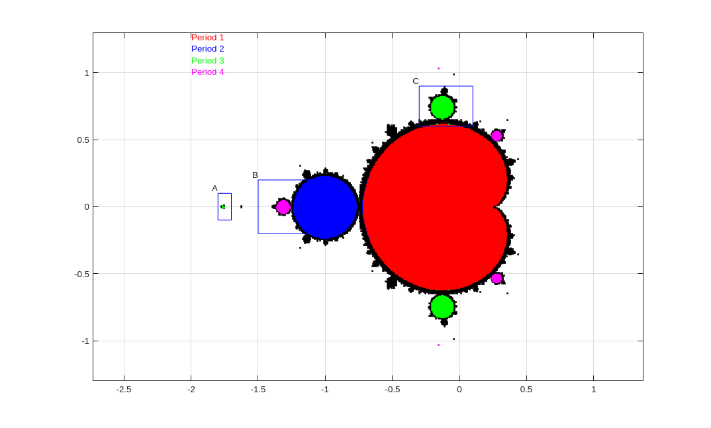
Figure A
There is an hyperbolic component coloured in magenta inside the rectangle B such that Pc has an attracting periodic orbit of period 4 points when c belongs to this component. We zoom in on this rectangle.
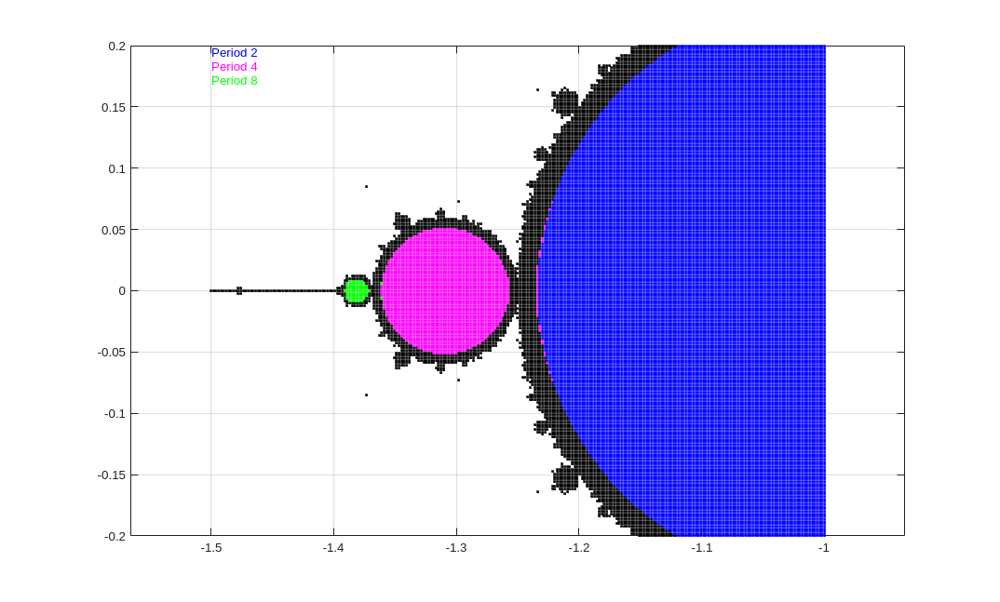
- The region in blue is a portion of W1/2. Thus Pc has an attracting or super-attracting periodic orbit of period 2 when c ∈ W1/2.
- The disk coloured in magenta is an hyperbolic component, denoted W1/2,1/4, such that Pc has an attracting or super-attracting periodic orbit of period 4 for c ∈ W1/2,1/4. We have that W1/2,1/4 ∩ W1/2 = {c1} for some c1 ∈ ℝ. The point c1 is a bifurcation point. The polynomial function Pc has an attracting or super-attractive periodic orbit of period 2 for c ∈ W1/2 and an attracting or super-attractive periodic orbit of period 4 for c ∈ W1/2,1/4.
- The small disk drawn in green is an hyperbolic component, denoted W1/2,1/4,1/8, such that Pc has an attracting or super-attracting periodic orbit of period 8 for c ∈ W1/2,1/4,1/8. This time, we have that W1/2,1/4,1/8 ∩ W1/2,1/4 = {c2} for some c2 ∈ ℝ. The point c2 is a bifurcation point. The polynomial function Pc has an attracting or super-attractive periodic orbit of period 4 for c ∈ W1/2,1/4 and an attracting or super-attractive periodic orbit of period 8 for c ∈ W1/2,1/4,1/8.
- This period doubling cascade is continued as c decreases to -2.
The hyperbolic component W1/2 can be described as we did for W0. In particular, we can define the function γW1/2: B1(0) → W1/2 such that c = γW1/2(e2pπp/q) is a bifurcation point of Pc for every p/q ∈ ℚ ∩ ]0,1] in reduced form. To define γW1/2: B1(0) → W1/2, we consider Pc∘2(z) = z. we get that
Two roots of this polynomial are fixed point of Pc. The solutions of Pc(z) = z2+c = z are z = z± = (1±(1-4c)1/2)/2. Therefore, z4+2cz2-z+c2+c is divisible by (z-z-)(z-z+)= z2-z+c. We get that
The roots of the polynomial z2+z+c+1 are z = w± = (1±(1-4(1+c))1/2)/2. Thus, we find the periodic orbit {w+, w-, w+, w-, ...} of period 2. This orbit is attracting if |(Pc∘2)'(w+)| = 4|c+1| < 1. Thus W1/2 = B1/4(-1). Hence γW1/2(u) = -1 + u/4 for u ∈ B1(0).
We get the bifurcation point γW1/2(0) = γW0(1) = -3/4 between W1/2 and W0 as expected. We also get the bifurcation point c1 = γW1/2(-1) = -5/4 between W1/2 and W1/2,1/4.
We now consider the hyperbolic component coloured in green inside the rectangle C in the above which contains points c such that Pc has an attracting or super-attracting periodic orbit of period 3. If we zoom in on this rectangle, we get the following figure.
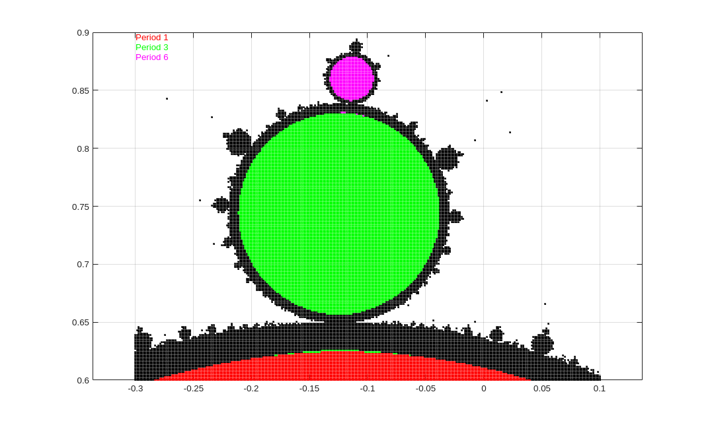
We observe again a period doubling cascade but this time from a hyperbolic component containing points c such that Pc has an attracting or super-attracting fixed point (region in red) to a hyperbolic component containing points c such that Pc has an attracting or super-attracting periodic orbit of period 3 (region in green), followed by a hyperbolic component containing points c such that Pc has an attracting or super-attracting periodic orbit of period 6 (region in magenta), and so on. We will not attempt to analyze this cascade as we have done above for the periodic doubling cascade along the interval [-2,0].
We obeserve a period doubling cascade similar to the period doubling cascades above for each bifurcation point given by γW0(e2πip/q) with p/q ∈ ℚ ∩ ]0,1] in reduced form. The same phenomenon is repeated for all hyperbolic components of the Mandelbrot set, not just W0.
We finally consider the region inside the rectangle A in the above. We seem to have located a hyperbolic component containing points c such that Pc has an attracting or super-attracting periodic orbit of period 3 (region in green). If we zoom in on this region, we get the following figure.
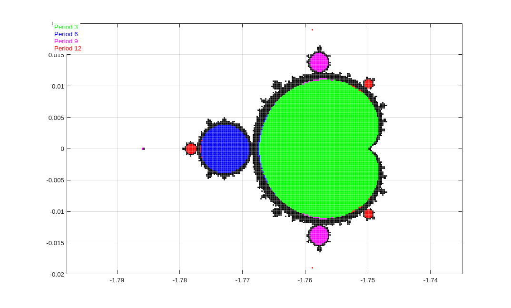
This time, we observe the beginning of a period doubling cascade starting with a hyperbolic component containing points c such that Pc has an attracting or super-attracting periodic orbit of period 3 (region in green), followed by a hyperbolic component containing points c such that Pc has an attracting or super-attracting periodic orbit of period 6 (region in blue), followed by a hyperbolic component containing points c such that Pc has an attracting or super-attracting periodic orbit of period 12 (region in red), and so on.
Filled Julia Sets for Pc
This section could have been included in the about Julia sets. However, since this section is specifically about the polynomial function Pc and is closely related to our study of the Mandelbrot set, it is more appropriate to include it in the present document. Most of the proofs of the results stated in this section are given in .
and are true if the Julia set JP is replaced by the filled Julia set KP. In the particular case of Pc, we then get that KPc is connected if and only if 0 ∈ KPc.
Proposition: If the filled Julia set KPc of Pc is connected, then there exists a unique analytic and conformal isomorphism φc: ℂ ∖ KPc → ℂ ∖ B1(0) such that φc(z)/z → 1 as |z| → ∞, and φc∘Pc∘φc-1 = P0 for |z| > 1.
We however provide a little stronger result. We do not really need it for this section because we consider only connected and even locally connect Julia sets. However, this result is useful for the study of the Mandelbrot set in the next section.
Proposition Ⅱ: Let KPc be the filled Julia set of Pc (connected or not connected). There exist a,b > 0 and an analytic and conformal isomorphism φc: ℂ ∖ Ba(0) → ℂ ∖ Bb(0) such that
- Ba(0) ⊃ KPc,
- Pc(ℂ ∖ Ba(0)) ⊂ ℂ ∖ Ba(0),
- P0(ℂ ∖ Bb(0)) ⊂ ℂ ∖ Bb(0),
- φc(z)/z → 1 as |z| → ∞, and
- φc∘Pc∘φc-1 = P0 for |z| > b.
It can be shown that
for z ∈ ℂ ∖ Ba(0), where the principal branch (the first branch) of the roots of degree 2∘k is used. The equality between the two formulae comes from the relation
[(Pc∘n(z))2-n/(Pc∘(n-1)(z))2-n-1]
= z [1+c/(Pc∘0(z))2]2-1 [1+c/(Pc∘1(z))2]2-2 ... [1+c/(Pc∘(n-1)(z))2]2-n
We can define Gc: ℂ ∖ KPc → ℝ as it follows.
| ⎧ | ln(|φc(z)|) if z ∈ ℂ ∖ Ba(0) | |
| Gc(z) = | ⎨ | Gc(Pc∘n(z))/2n if z ∈ Ba(0) ∖ KPc |
| ⎩ | where n is large enough to have Pc∘n(z) ∈ ℂ ∖ Ba(0) |
Proposition: We have that Gc is harmonic, Gc(z) - ln(|z|) is bounded in a neighbourhood of ∞, and Gc(z) → 0 as dist(z,KPc) → 0. Moreover, Gc(z) = Gc(Pc(z))/2 for all z ∈ ℂ ∖ KP.
Remark: It follows from φc(z)/z → 1 as |z| → ∞ that ln|(φc(z)/z)| = ln|φc(z)|-ln|z| = Gc(z)-ln|z| → 0 as |z| → ∞. Moreover, since n → ∞ in the definition of Gc above as dist(z,KPc) → 0, we get that Gc(z) → 0 as dist(z,KPc) → 0.
We prove that the function Gc is well defined; namely, the definition of Gc(z) for z ∈ Bb(0) ∖ KPc is independent of the choice of n. At the same time, we prove the relation Gc(z) = Gc(Pc(z))/2. It follows from
for z ∈ ℂ ∖ Bb(0) that
for z ∈ ℂ ∖ Bb(0). Inductively, we get that
for n ∈ ℕ and z ∈ ℂ ∖ Bb(0). Thus, the definition of Gc(z) for z ∈ Bb(0) ∖ KPc is independent of the choice of n. If z ∈ Bb(0) ∖ KPc and n is large enough to have Pc∘n(Pc(z)) ∈ ℂ ∖ Bb(0), then Gc(Pc(z)) = Gc(Pc∘(n+1)(z))/2n = 2(Gc(Pc∘(n+1)(z))/2n+1) = 2Gc(z).
Since Gc(z) - ln(|z|) is bounded in a neighbourhood of ∞, we have that
Since Gc(z) → 0 as dist(z,KPc) → 0, it is natural to defined Gc(z) = 0 for z ∈ KPc.
Remark: Using the standard isomorphism between ℂ and ℝ2, we can always treat a function f:ℂ → ℝ as a function f:ℝ2 → ℝ. This is done in this section. For instance, when we say that Gc is harmonic.
Remark: If the filled Julia set KPc of Pc is connected, then Gc(z) = ln(|φc(z)|) for all z ∈ ℂ ∖ Kc.
For the rest of this section, we assume that the filled Julia set KPc is connected.
For r > 1, let
and Qc(r) be the closed, simply connected component bounded by the closed curve Γc(r). We have that KPc = ∩r>1 Qc(r). The family of orthogonal curves to the family of closed curves {Γc(r) : r > 1} is the family of curves {Ξc(t) : 0 ≤ t < 1} where
The curves Γc are called equipotential lines and the curves Ξc are called field lines or external rays.
Since
we get that
= {z : limm→∞ ln(|Pc∘m(z)|)/2m ≤ 2k} = {z : Gc(z) ≤ 2k} = Qc(e2k) .
Hence
= {z : limm→∞ ln(|Pc∘(m-k+j)(z)|)/2m ≤ 1} = Qc(e2k-j)
for j ≥ 0. We set k = 3 and consider the sets
= {z : |z| ≤ e8} = Be8(0) .
We use the relation
in the Matlab function to sketch (approximately) the equipotential lines Γc(e23-j) for various values of j ≥ 3. The algorithm used in the Matlab function julia4 is an adaptation of the algorithm suggested in . We note that they use log2 instead of ln as we have done in the definitions above. Therefore, instead of Be8(0), they use B28(0) which is a ball smaller than ours. Nevertheless, the equipotential lines Γc(e23-j) are the same up to scaling.
Example: In the figure below, we draw the equipotential lines Γc(e23-j) for j = 4, 6, 8, 10, 12 associated the filled Julia set KPc for c = -0.12256+0.74486i, the Daoudy's rabbit.
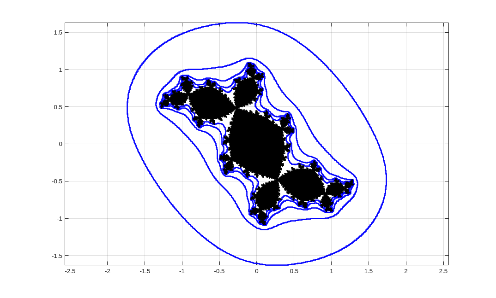
Remark: The escape time algorithm presented in many introductory textbooks on Julia sets is another way to present the equipotential lines. Points z outside Qc(e23-j) reach Qc(e8) in less than j iterations; namely, we get Pc∘j(z) ∈ Qc(e8). If our only goal it to illustrate a Julia set, then the ball Be8(0) in our algorithm to draw equipotential lines can be replaced by any other ball containing the Julia set as it is done in the many introductory textbooks on Julia sets.
If the filled Julia set KPc is locally connected, then it is proved using a theorem of Carathéodory that the analytic and conformal function ψc = φc-1: ℂ ∖ B1(0) → ℂ ∖ KPc can be continuously extended to ℂ ∖ B1(0) such that ψc:S1 → ∂KPc is onto. Hence, the function ψc:S1 → ∂KPc can be used as a parametric representation of ∂KPc. The closed curve ψc:S1 → ∂KPc is called the lasso of Carathéodory. It then follows that all the external rays Ξc(t) for 0 ≤ t < 1 end on ∂KPc. Since the function ψc may not be one-to-one on S1, there may be more than one external ray Ξc(t) that end at the same point on ∂KPc.
Remark: Since the function φ: ℝ/ℤ → S1 ⊂ ℂ defined by φ(t) = e2πit is an isomorphism of groups between ℝ/ℤ and S1, we may treat S1 as ℝ/ℤ. Recall that S1 is a multiplicative group and ℝ/ℤ is an additive group, and φ is an isomorphism of groups because φ(t1+t2) = e2πi(t1+t2) = e2πt1 e2πt2 = φ(t1) φ(t2). Thus, we may consider ψc: ℝ/ℤ → ∂KPc defined by ψc(t) = ψc(e2πit) for t ∈ ℝ/ℤ instead of ψc:S1 → ∂KPc when this is more convenient.
Remark: Before diving deeper into the study of external rays we need to review some result about the function T:S1 → S1 defined by T(z) = z2. Using the isomorphism φ: ℝ/ℤ → S1 ⊂ ℂ defined in the previous remark, we may consider T: ℝ/ℤ → ℝ/ℤ defined by T(t) = 2t mod 1 instead of T:S1 → S1 above.
The periodic points of T of period k or a divisor of k are of the form t = n/(2k-1) for 1 ≤ n < 2k-1. We list some of the periodic orbits below.
| Period | Orbits | 1 (fixed point) | {1,1,1,...} | 2 | {1/3,2/3,1/3,...} | 3 | {1/7,2/7,4/7,1/7,...} {3/7,6/7,5/7,3/7,...} |
4 | {1/15,2/15,4/15,8/15,1/15,...} {1/5,2/5,4/5,3/5,1/5...} {7/15,14/15,13/15,11/15,7/15...} |
|---|
To prove that Pc(Ξc(t)) = Ξc(2t), we recall that φc(Pc(z)) = (φc(z))2. Thus
In particular, we have that Pc(ψc(t)) = ψc(2t). Therefore, z = ψc(a) for some a ∈ ℝ/ℤ is a periodic (resp. an eventually periodic) point of period k for Pc if and only if a is a periodic (resp. an eventually periodic) point of period k for T:ℝ/ℤ → ℝ/ℤ. This result will be very useful in the discussion below.
If the filled Julia set KPc is not locally connected, then we cannot state that all the external rays Ξc(t) end on ∂KPc. An external ray Ξc(t) may converge to this boundary as r → 1+ but never reach it. We will come back on this topic in the context of the study of the external rays for the Mandelbrot set in the next section.
The following points play an important rule in the study of the Julia sets and the Mandelbrot set.
Definition: A point c ∈ ℂ is a Misiurewicz point if 0 is an eventually periodic but not a periodic point for Pc.
If follows from that JPc = KPc when c is a Misiurewicz point.
Proposition: If c is a point belonging to an hyperbolic component of the Mandelbrot set or a Misiurewicz point, then the filled Julia set KPc is locally connected.
It will be useful for our study of the Mandelbrot set in the next section to be able to describe some of the external rays of Kc when c is the centre of an hyperbolic component of the Mandelbrot set M or when c is a Misiurewicz point.
Case 1: c is the Centre of an Hyperbolic Component
We suppose that W is an hyperbolic component. Let c = γW(0), the centre of W. We have that Pc has a super-attracting periodic orbit. Thus, 0 belongs to this super-attracting periodic orbit and c = Pc(0). Hence c is a critical value. Moreover, c belongs to this super-attracting periodic orbit. It follows that c is an interior point of Kc. Let Uc be the simply connected component of KPc ∖ JPc containing c. We suppose that the super-attracting periodic orbit is of period m. There exists an analytic isomorphism ηc:Uc → B1(0) such that ηc∘(Pc∘m)∘ηc-1 = P0 on B1(0). Moreover, if μc = ηc-1, then μc can be extended to a continuous function on B1(0) with μc(S1) = ∂Uc. Let z = μc(1) be the root of Uc. Then Pc∘m(z) = z and z ∈ JPc ∩ ∂Uc. Given t ∈ ψc-1({z}), it follows from Pc(ψc(t)) = ψc(2t) that t ∈ ]0,1] belongs to a periodic orbit of period m or a divisor of m under the action of the function T:ℝ/ℤ → ℝ/ℤ defined in the previous remark. Moreover, ψc-1({z}) always contains at least two consecutive values of the set {1/m, 2/m, ..., (m-1)/m} if c ≠ 0.
Example A: We consider the hyperbolic component W1/2. We have that c = γW1/2(0) = -1. The polynomial function P-1 has the super-attracting periodic orbit of period 2 given by {0, -1, 0, -1, ...}. We note that -1 is effectively a critical value of P-1. A little look at the graph of P-1∘2:ℝ → ℝ shows that z = γW1/2(1) = (1-51/2)/2 ≈ -0.618034 is an repulsive fixed point of P-1. Since there must be two consecutive values from {1/3,2/3} in ψ-1-1({z}), the two external rays Ξ-1(1/3) and Ξ-1(2/3) ends at z.
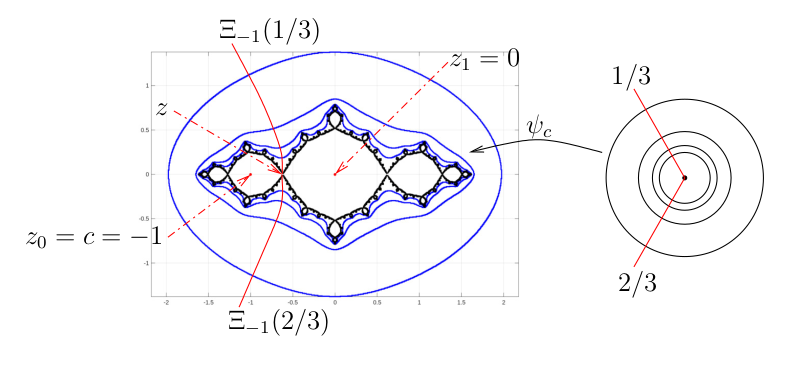
Example B (): We consider the hyperbolic component W which is represented by a little point in magenta above the rectangle C in the above. Since W is really small from a numerical computation point of view, we may assume that c = γW(0) ≈ -0.15652+1.03225i, the location of the little point. The polynomial function Pc has the super-attracting periodic orbit of period 4 given approximately by
We note that c is effectively a critical value of Pc. Let z = γW(1). The set ψc-1({z}) must contain two consecutive values from {1/15,2/15, ...,14/15}. Since Pc maps the external rays associated to the simply connected component of KPc ∖ JPc containing a periodic point to the external rays associated to the simply connected component of KPc ∖ JPc containing the next periodic point, we cannot have that ψc-1({z}) = {1/15, 2/15}. Because of the location of c (see the figure below), we should have that ψc-1({z}) = {3/15, 4/15}. Hence, we get that the external rays Ξc(1/5) and Ξc(4/15) end at z. The other external rays are obtained using the relation Pc(Ξc(t)) = Ξc(2t).
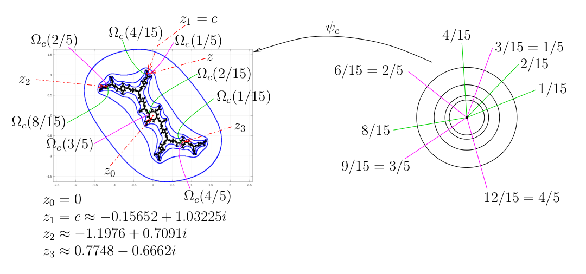
Case 2: c is a Misiurewicz Point
We develop some tools to identify the external rays of the Julia set of the polynomial function Pc when c is a Misiurewicz point. Must of the results in this subsection are also valid if 0 belongs to a attractive periodic orbit.
We consider the polynomial functions Pc and assume that Dj for 1 ≤ j ≤ J are the connected components of KPc ∖ JPc. We have from that Dj is simply connected. We can define an homeomorphism ρj: Dj → B1(0) for each j. A curve L ⊂ KPc is a regular arc if ρj(L ∩ Dj) is a subset of two radius in B1(0) for all j. A subset B of KPc is regularly connected if, for every x,y ∈ B, there exists a regular arc from x to y in B. We have that the union of regularly connected sets with a non empty common intersection is a regularly connected set, and the intersection of regularly connected sets is a regularly connected set. The regular envelop RA of a subset A of KPc is the regularly connected set defined by RA = ∩B ⊃A, B reg. conn. B.
Example: We have drawn the regular arc L from x ∈ D1 to y ∈ D3 in the figure below. The regular arc L goes through w1 = ρ1-1(0) = -1, w2 = ρ2-1(0) = 0 and w3 = ρ3-1(0) = 1 in KP-1. This regular arc is unique.
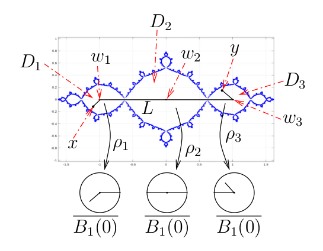
Definition; Let Ac = {Pc∘n(0)}n≥0, the orbit of the critical point 0. The Hubbard tree Hc of Pc is the regular envelop RAc of Ac in KPc.
We have that Pc(Hc) ⊂ Hc. Moreover, the polynomial function Pc is one-to-one on the closure of each connected component of Hc ∖ {0}.
Example C: We have drawn on the right in the figure below a schema of the Hubbert tree Hc of Pc where c ≈ -0.15652 + 1.03225i. We have that Ac = {Pc∘n(0)}n≥0 = {z0, z1, z2, z3} with z0 = 0, z1 = c ≈ -0.15652+1.03225i, z2 ≈ -1.1976+0.7091i and z3 ≈ 0.7748-0.6662i.
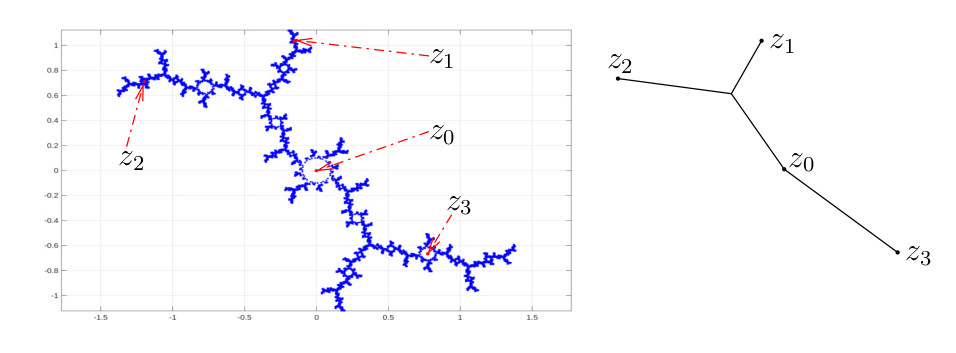
Let βi = ψc(i/2) for i = 0,1. We have that β0 is a repulsive fixed point becasue β0 ∈ Jc.
Proposition Ⅲ: Let Âc = Ac ∪ {β0,β1} and Ĥc be the regular envelop RÂc of Âc. We split Ĥc at 0 to get Ĥc = Ĥ+ ∪ Ĥ- with Ĥ+ ∩ Ĥ- = {0} and c ∈ Ĥ+. Then Pc|Ĥ+/- is one-to-one, β0 ∈ Ĥ- and β1 ∈ Ĥ+. Moreover, β0 and β1 are end points of Ĥc, and Ξc(i/2) is the only external ray ending at βi for i = 0,1.
Example: As in the previous example, we consider the polynomial function Pc where c ≈ -0.15652 + 1.03225i. We have drawn on the right in the figure below a schema of the regular envelop Ĥc of Âc = Ac ∪ {β0,β1}.
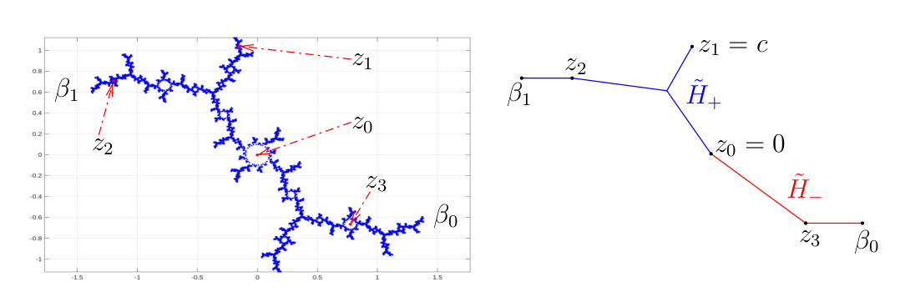
The points in Ac and the branching points of the Hubbard tree Hc of a polynomial function Pc are called remarkable points. We assume that Hc ∩ ∂KPc ≠ ∅ and choose z ∈ Hc ∩ ∂KPc. Let D be a closed ball centred at z that does not contain any remarkable points other than z itself. Moreover, suppose that L(z,wj) for 1 ≤ j ≤ J are the strands of the branches of Hc emanating from z where wj is the first point of intersection of a branch with ∂D. The accesses to z (relative to Hc) are the connected components of D ∖ ∪j∈J L(z,zj). The following figure illustrate this definition in the case where there are three accesses to z; the regions denoted by I, II and III.
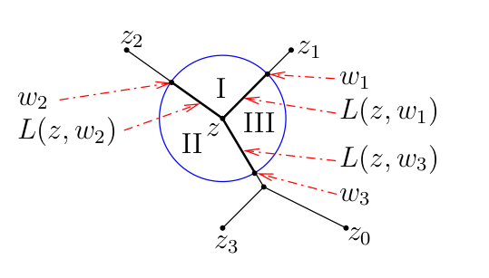
Proposition: We assume that z ∈ Hc ∩ ∂KPc as defined in the previous paragraph. There is at least one external ray per access that ends at z.
Given z ∈ Ac, we define ν(z) as the number of strands emanating from z in Hc. The degree of ramification of z, denoted τ(z), is one more than the multiplicity of z as a critical point. Therefore, we have that τ(z) = 2 for z = 0, and τ(z) = 1 otherwise.
Proposition: If Ac = {Pc∘n(0)}n≥0 is an eventually periodic orbit that is not periodic, then ν(0) = 2 and
If Ac = {Pc∘n(0)}n≥0 is a periodic orbit of period k > 1, then there exists 1 < m ≤ k such that ν(zn) = 1 for 1 ≤ n ≤ m and ν(zn) = 2 for m < n ≤ k.
If Ac = {Pc∘n(0)}n≥0 = {0}, namely c = 0 and 0 is a fixed point, then ν(0) = 0.
Example: In , we have that Ac = {Pc∘n(0)}n≥0 is a periodic orbit of period k = 4 and m = 3 in the previous proposition. We note in particular that ν(0) = ν(z0) = ν(z4) = 2.
For the remainder of this section, we assume that c is a Misiurewicz point.
For each zn ∈ Ac, let μ(zn) = ν(zm) ∏n≤i≤m τ(zi) where m ≥ n is large enough to have that zm ∈ Ac is a periodic point. Moreover, let Tc be the tree obtained from Ĥc by adding μ(zm)-ν(zn) extra strands at each point zn ∈ Ac (this includes the strands associated to β0 and β1 if necessary.) The tree Tc is a included in the tree Pc-1(Ĥc). There are μ(zn) strands and accesses at each zn ∈ Ac. Finally, we define a function u: ℝ/ℤ → {0,1} by u(t) = j if j/2 ≤ t < (j+1)/2 for j = 0,1.
Theorem Ⅳ: Suppose that z ∈ Ac and that Ξc(t) is an external ray ending at z. Let tn ∈ [0,1[ be such that Ξc(tn) = Pc∘(n-1)(Ξc(t)) for n ≥ 1. Then t = ∑n≥1 u(tn)/2n.
The statement of the previous theorem requires an explanation.
Since Pc(Ξc(t))
= Ξc(2t), we obviously have that
tn = 2n-1 t for
n ≥ 1. However, this information is useless
since we do not know t. To find the value
of t, we use instead the property that
Pc is a conformal transformation that
maps
remarkable points to remarkable points, strands
to strands, and accesses to accesses. When we say that
Pc maps an access V at
zn ∈ Ac to an access
W at zn+1, we do
not mean that Pc(V) ⊂ W because
Pc is expanding. However, by shrinking
the closed ball D used to define the accesses to
zn, we may get
Pc(V) ⊂ W as illustrated in the
figure below.
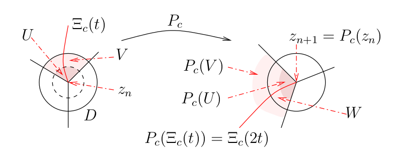
If Ξc(t) = {ψc(re2πti) : r ≥ 1} is an external ray ending at zn and such that ψc(re2πti) ∈ V for r closed enough to 1, then Pc(Ξc(t)) = {ψc(re4πti) : r ≥ 1} is an external ray ending at zn+1 and such that ψc(re4πti) ∈ W for r closed enough to 1.
Therefore, to determine the value of t in , we only have to keep track of the iterations of the accesses under the action of Pc.
Corollary: There is one and only one external ray (associated to Tc) per access. The value of t for the external ray Ξc(t) ending at z ∈ Ac is always a rational number of the reduced form p/q where q is prime if and only if z is a periodic point.
Example D: We consider Pc with c = i. We have that i is a Misiurewicz point; more precisely, we have the orbit {0, i, i-1, -i, i-1, -i, ...}. The eventual periodic orbit is pf period 2.
Since μ(z0) = 2 and μ(zn) = 1 for n > 0, there are no extra strands to add to Ĥc.
To determine the value of t for the external ray ending at z1, we keep track of the iterations of its only access. We have u(tn) = 0 when the iteration is in the region in white and u(tn) = 1 when the iteration is in the region in pink. Hence, we get u(t1) = u(t2) = 0, u(t3) = 1, u(t4) = 0, u(t5) = 1, and so on as we can observe in the figure below. Thus, we have that t = (0.001)2 = 1/6 for the external ray ending at z1. Similarly, to determine the value of t for the external ray ending at z2, we keep track of the iterations of its only access. As before, we have u(tn) = 0 when the iteration is in the region in white and u(tn) = 1 when the iteration is in the region in pink. Hence, we have that t = (0.01)2 = 1/3 for the external ray ending at z2.
We could proceed as before to find the value of t for the external ray ending at z3 or we may simply use the relation Pc(Ξc(t)) = Ξc(2t) to get that t = 2/3 for the external ray ending at z3. We can also use the relation Pc(Ξc(t)) = Ξc(2t) to get the values of t for the two external rays ending at z0. We get t = 1/12 and t = 7/12. Note that there are two accesses at z0. The reader is invited to verify that yields these values of t.
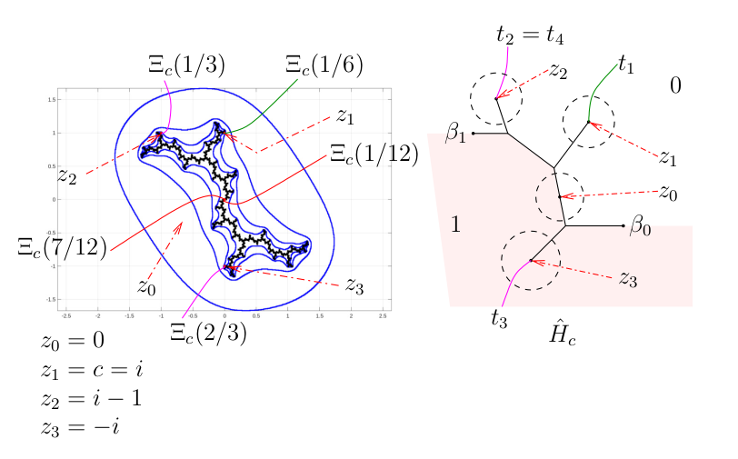
Example E: We consider Pc with c ≈ -0.101096+0.956286i. We have that c is a Misiurewicz point; more precisely, we have the orbit
We eventually get a fixed point. Since μ(z0) = 6 and μ(zn) = 3 for n > 0, we have to add extra strands to Ĥc: four extra strands at z0 and two extra strands at zn for 1 ≤ n < 4. The strands for β0 and β1 counts as extra strands.
To determine the value of t for the first external ray ending at z1, we keep track of the iterations of the access used by this external ray. We have u(tn) = 0 when the iteration is in the region in white and u(tn) = 1 when the iteration is in the region in pink. Hence, we get u(t1) = u(t2) = 0, u(t3) = 1, u(t4) = 0, u(t5) = 1, u(t6) = 0, u(t7) = 0, u(t8) = 1, and so on as it can be observed in the figure below. Thus, we have that t = (0.001010)2 = 9/56 for the first external ray ending at z1. Using the same procedure, we get that t = 11/56 for the second external ray ending at z1 and t = 15/56 for the third external ray ending at z1.
We could proceed as before to find the values of t for the external rays ending at zn for n > 1 or we may simply use the relation Pc(Ξc(t)) = Ξc(2t). Using this relation, we find that the value of t for the first external ray ending at z4 is 25 9/56 = 1/7 mod 1. If we use to find the value of t for the first external ray ending at z4, we find that t = (0.001)2 = 1/7 as it should be.
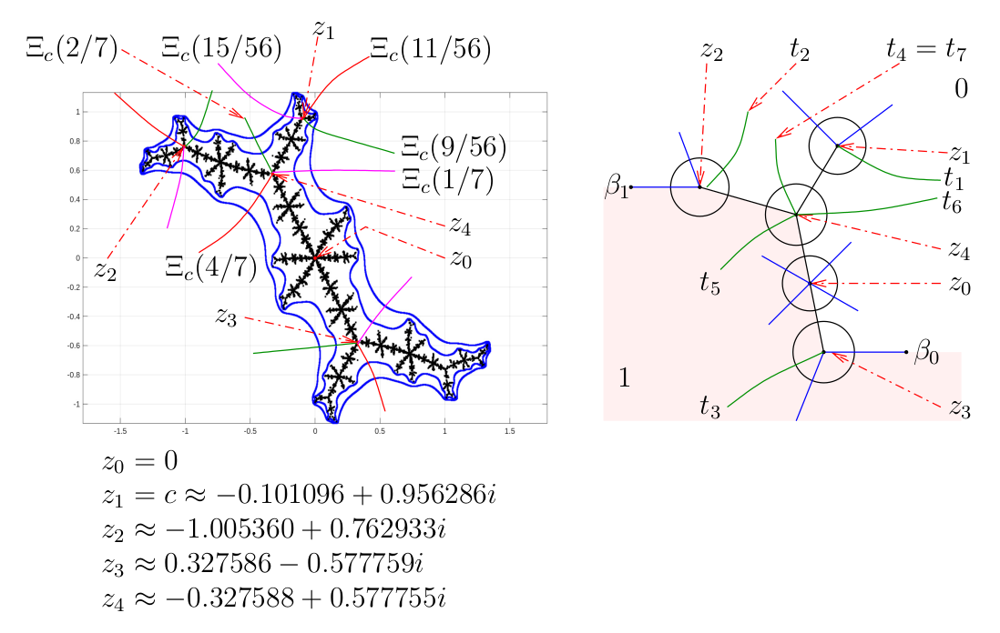
After having read the previous examples, the reader may believe that the extra strands could have been predicted from the figure of Jc. However, the quality of the figure is limited by the accuracy of the numerical computations and the computer screen resolution. Thus, though the figure could be used as an investigation tool, we need the theory to confirm the number of extra strands.
present a different method to find the values of t for the external rays Ξc(t) of the Julia set of Pc. They use backward iterations of Pc in association with the regions bounded by the equipotential lines Γc(e23-j) for j > 4 to generate the binary representation of t.
Remark: The action of Pc on the Hubbard tree, its extensions and the remarkable points is quite interesting. We provide a little bit more information on this topic below in the case where c is a Misiurewicz point.
We can retrieve Ĥc from Hc. Let Hc[1] = Pc-1(Hc). We have that Hc[1] = RAc[1] where Ac[1] = Pc-1(Ac). As in , we can express Hc[1] as Hc[1] = H+[1] ∪ H-[1] where H+[1] ∩ H-[1] = {0} and c ∈ H+[1]. Let L(β0,0) and L(β0,c) be respectively the regular arcs from β0 to 0 and from β0 to c in Hc[1]. We have that Pc: L(β0,0) → L(β0,c) is an homeomorphism. Thus, we may define the inverse function Qc: L(β0,c) → L(β0,0) ⊂ L(β0,c) by Qc(w) = z if and only if w = Pc(z) with z ∈ L(β0,0). Let wn = Qc∘n(c) for n ≥ 1. We have that w1 = 0 and wn ∈ L(β0,0) for n ≥ 1. Let n* = sup{n : wn ∈ Hc}. We have that n* = ∞ if and only if β0 ∈ Hc. Thus n* = ∞ if and only if β0 ∈ H- is a fixed point. In this last case, we get that Hc = Ĥc. If n* < ∞, then we get an homeomorphism from Ĥc onto the regular envelop of Hc ∪ {-wn*+1, wn*+1} inside Hc[1]. This homeomorphism is the identity on Hc and maps (-1)iwn*+1 to βi for i = 0,1.
Equipotential Lines and external rays of the Mandelbrot Set
Proposition: The function φc: ℂ ∖ Ba(0) → ℂ ∖ Bb(0) defined in can be extended to an isomorphism φc: ℂ ∖ Gc-1(Bh(0)) → ℂ ∖ Beh(0) where h = Gc(0).
Since 0 ∉ KPc for c ∉ M, we have that h = Gc(0) > 0 for c ∉ M. Hence, Gc(c) = Gc(Pc(0)) = 2Gc(0) = 2h > h. Thus, we may define φM: ℂ ∖ M → ℂ ∖ Beh(0) by φM(c) = φc(c). We have that φM: ℂ ∖ M → ℂ ∖ B1(0) because ln(|φc(c)|) = Gc(c) > h > 0 implies that |φc(c)| > 1. In fact, we have that φM: ℂ ∖ M → ℂ ∖ B1(0) is an isomorphism. We define the function GM:ℂ ∖ M → ℝ by GM(c) = ln(|φM(c)|) = Gc(c) for all c ∈ ℂ ∖ M.
As we did for the filled Julia sets, we can define the equipotential lines
for r > 1, and let QM(r) be the closed, simply connected component bounded by the closed curve ΓM(r). We have that M = ∩r>1 QM(r).
As we did in the previous section, we can prove that GM(c) = Gc(c) = limn→∞ ln(|Pc∘n(c)|)/2n and QM(e2k) = {c : limm→∞ ln(|Pc∘(m-k)(c)|)/2m ≤ 1} for k ≥ 0. Hence
= {c : Pc∘j(c) ∈ {z : limm→∞ ln(|Pc∘(m-k)(z)|)/2m ≤ 1}}
= {c : Pc∘j(c) ∈ Qc(e2k) .
If we take k = 3 as we did in the previous section about the filled Julia sets, and use the relation Qc(e8) ≈ Be8(0), we get that QM(e2k-j) ≈ {c : Pc∘j(c) ∈ Be8(0)}. Thus ΓM(e23-j) ≈ ∂{c : Pc∘j(c) ∈ Be8(0)} for j ≥ 0.
Example: We have used the Matlab function to draw some equipotential lines of the Mandelbrot set.
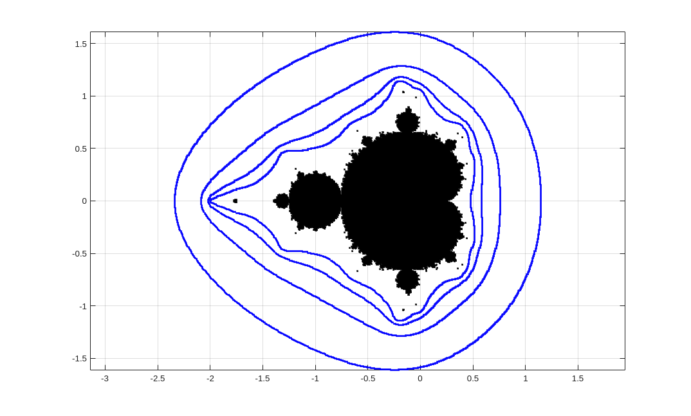
The family of orthogonal curves to the family of closed curves {ΓM(r) : r > 1} is the family of curves {ΞM(t) : 0 ≤ t < 1} where
As for the filled Julia sets, these curves are called field lines or external rays.
Since it is not known if the Mandelbrot set is locally connected, we do not know if the function ψM = φM-1: ℂ ∖ B1(0) → ℂ ∖ M can be extended to a continuous function on a domain that includes the boundary of B1(0). Thus, we cannot affirm that the external rays ΞM(t) for 0 ≤ t < 1 end on the boundary of M. We summarize below what is known about this topic.
Proposition: Suppose that t ∈ ℝ/ℤ. Then, the external rays ΞM(t) end at the points v = γM(t) ∈ ∂ M that are either a root of an hyperbolic component W of M or a Misiurewicz point. More precisely,
- If t is a periodic point of period m for the function T:[0,1[ → [0,1[ defined by T(t) = 2t mod 1, then v is the root of an hyperbolic component W. Moreover, if c is the centre of W and z is the root of the simply connected component Uc of KPc ∖ JPc containing c as described in the above, then ψM-1({v}) = ψc-1({z}). There is one exception. If v = 1/4, then t = 0 only.
- If t is an eventually periodic point but not a periodic point of the function T, then c is a Misiurewicz point. Moreover, ψM-1({v}) = ψv-1({v}).
If t = p/q in reduced form with 0 ≤ p < q, then we have the case 1 when q is odd and the case 2 when q is even.
Example: We get the following results from , , and .
- The two external rays of M ending at -3/4, the root of the hyperbolic component W1/2, are ΞM(1/3) and ΞM(2/3).
- The two external rays of M ending at the root of the hyperbolic component with centre at -0.15652+1.03225i are ΞM(1/5) and ΞM(4/15).
- The only external ray of M ending at i is ΞM(1/6).
- The three external rays of M ending at -0.101096+0.956286i are ΞM(9/56), ΞM(11/56) and ΞM(15/56).
We have drawn the part of the Mandelbrot set in the neighbourhood of c = -0.101096+0.956286i and sketched the three external rays ending at c. Some equipotential lines have also been drawn in blue.
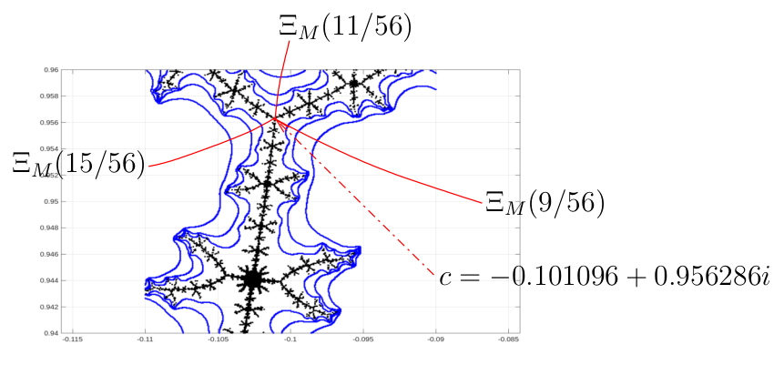
It has been proved that the set of Misiurewicz points is dense in ∂M. More surprisingly, it has also been proved that ∂M is a subset of the closure of the set of centres of all the hyperbolic components of M. If c is not the root of an hyperbolic component of the Mandelbrot set nor a Misiurewicz point, then c is a point of a neutral periodic orbit of Pc associated to a Seigel disk.
And more ...
We also observe local similarity between the Mandelbrot set in a neighbourhood of a Misiurewicz point c and the Julia set of Pc in a neighbourhood of c as illustrated in the figures below for c = -0.101096 + 0.956287i. In both figures, we zoom in on a neighbourhood of c.
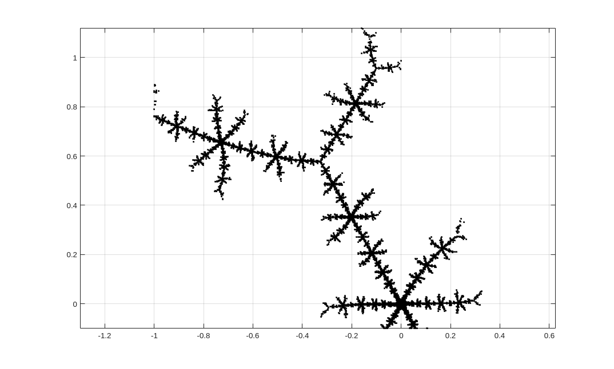
The Julia set of Pc in a neighbourhood of c = -0.101096 + 0.956287i.
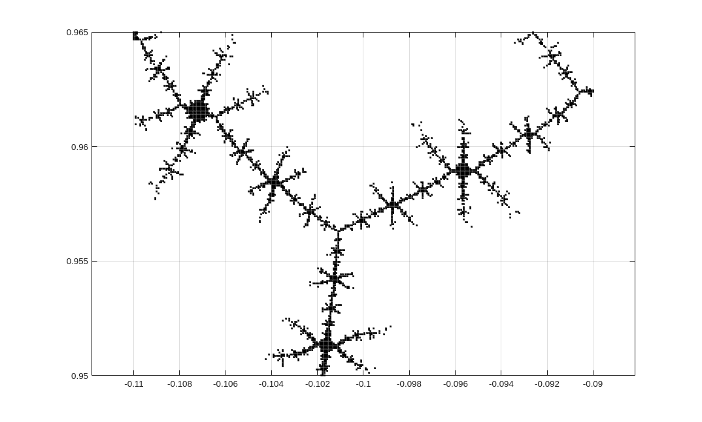
The Mandelbrot set in a neighbourhood of c = -0.101096 + 0.956287i.
The notion of similarity is explained in mathematical terms in some of the at the end of this document. It involves translation, rotation and dilatation. Because of this property of local similarity, some authors say that the Mandebrot set is a table of content for the Julia sets.
The Mandelbrot set is not unique to the family of polynomial
functions Pc with
c ∈ ℂ. In
, they show that Mandelbrot sets are present
in the parameter space of some families of rational functions that are
locally polynomial-like
. For instance, this is
observed in the family of rational functions Nc
for c ∈ ℂ that we obtain by
applying the Newton method to the polynomial functions
Qc
defined by Qc(z) = (z-1)(z-c+1/2)(z+c+1/2).
Namely,
for c ∈ ℂ. The sequence {Nc∘n(0)}n≥0 may converge to one of the three roots: 1, -c-1/2 or c-1/2. It may also not converge to one of these three roots but instead be eventually periodic. In the figure below, the points c where {Nc∘n(0)}n≥0 converges to r1 = 1, r2 = -c-1/2 and r1 = c-1/1 are coloured in red, blue and green respectively. Otherwise, the points c are coloured in black. For the values of c in the little Mandelbrot set in the figures below, the orbits {Nc∘n(0)}n≥0 are eventually periodic and the periods are multiples of 2.
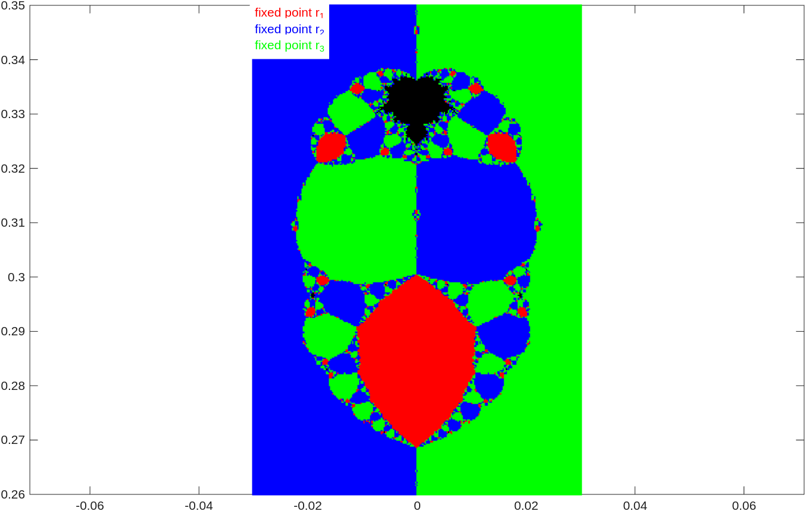
If we zoom in on the region of the parameter space that contains the little Mandelbrot set near c = i/3, we get the following intricate figure.

There are other Mandelbrot sets in the parametric space of Nc. If we zoom in the region of the parameter space of Nc around the point c = 0.51i, then we get the figure below. For the points c belonging to the Mandelbrot set in the figure below, the orbits {Nc∘n(0)}n≥0 are eventually periodic and the periods are multiples of 3.
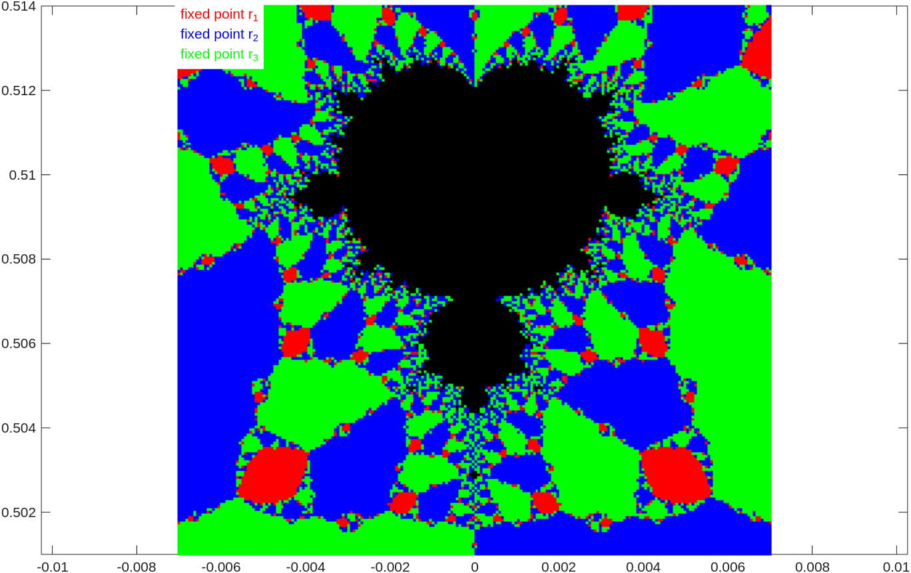
There are a lot more to say about the Mandelbrot set and also a lot that we do not know about it. One of the major unanswered question is if the Mandelbrot set is locally connected. This is probably a good place to end this document. This is also the limit of the author's knowledge about the Mandelbrot set.
Graphical Exploration of the Mandelbrot Set
The following graphical application can be used to draw the Mandelbrot set. The points coloured in black form the Mandelbrot set. The image of the Mandelbrot set produced with this graphical application may suggest that the Mandelbrot set is not connected but it is. Unfortunately, the graphical application is written in JavaScript and is not very accurate. It is also limited by the resolution of the computer screen. This is the compromise that had to be made to create an application that can reasonably be run in a standard browser.
Mandelbrot Set
|
To zoom in on a region of the Mandelbrot set, it suffices to click with the left button of the mouse on the region of interest in the figure above. The number of iteration should be increased when zooming in to get a more accurate image. To draw the filled Julia set associated to a point in the Mandelbrot set, it suffices to click on the point with the left button of the mouse when holding the Alt key. The filled Julia set is displayed in the window of the graphical application below. |
The Mandelbrot set is also called the gingerbread man. The Mandelbrot set looks like a gingerbread man cookie, doesn't it? If we zoom in on some region of the Mandelbrot set, we will see smaller and smaller gingerbread men. This is comparable to the self-similarity that we have observed in the images generated with IFS.
Julia Sets
|
To zoom in on a region of the Julia set, it suffices to click with the left button of the mouse on the region of interest in the figure above. The number of iterations should be increased when zooming in to get a more accurate image. Warning: Increasing the number of iterations may not produce a more acurate image because of round-off error. In fact, the opposite may happen. To see the Only decimal numbers can be used as values for Real(c) and Im(c). An expression like 1/2 is not accepted because the content of these fields is not evaluated mathematically. |
References
The content of this document is mostly based on the following books and articles.
- P. Blanchard, Complex Analytic Dynamics of the Riemann Sphere, Bull. Amer. Math. Soc. (N.S.) 11 (1984), 85-141.
- B. Branner, The Mandelbrot Set, in Chaos and Fractals: The Mathematics Behind the Computer Graphics, R. L. Devaney and L. Keen, Editors, Proceeding of symposia in applied mathematics, AMS short course lecture notes (1989), 57-74.
- A. Douady, Systèmes dynamiques holomorphes, Séminaire Bourbaki, 35e année, 599, Astérisque 105-106 (1982), 39-63.
- A. Douady and J. Hubbard, Itération des polynômes quadratiques complexes, C. R. Acad. Sci. Paris, 294 (1982), 123-126.
- A. Douady and J. Hubbard (avec la collaboration de P. Lavours, T. Lei et P. Sentena), Étude dynamique des polynômes complexes, Soc. Math. France (2007). (The initial version was published in Publ. Math. Orsay in 1984, 1985.)
- A. Douady and J. Hubbard, On the Dynamics of Polynomial-Like Mappings, Ann. Sci. École Norm. Sup.,(4) 18 (1985), 287-343.
- H.-O. Peitgen, H. jürgens and D. Saupe, Chaos and Fractals: New Frontiers of Science, Springer-Verlag (1992).
| Previous document |